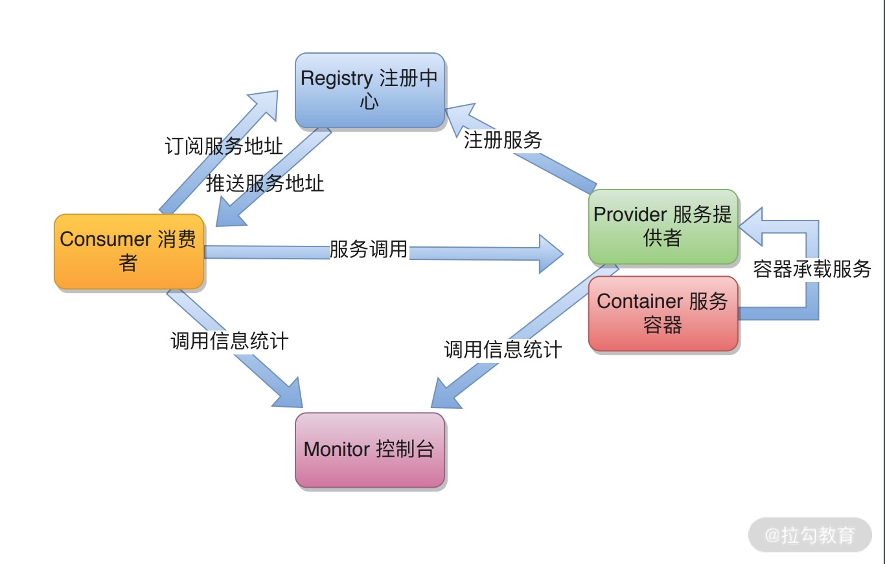
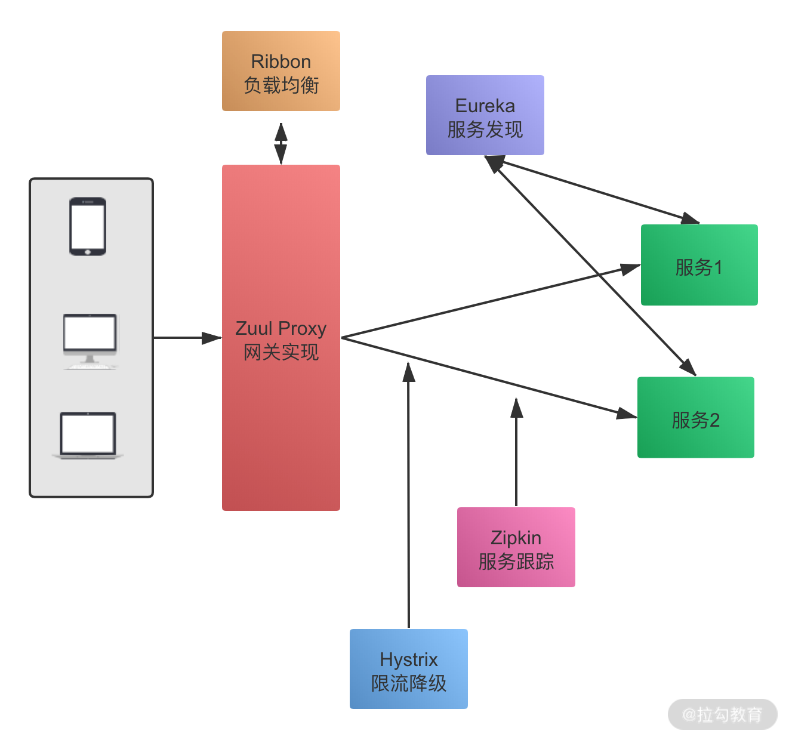

- 00 开篇词：搭建分布式知识体系，挑战高薪 Offer.md.html
- 01 如何证明分布式系统的 CAP 理论？.md.html
- 02 不同数据一致性模型有哪些应用？.md.html
- 03 如何透彻理解 Paxos 算法？.md.html
- 04 ZooKeeper 如何保证数据一致性？.md.html
- 05 共识问题：区块链如何确认记账权？.md.html
- 06 如何准备一线互联网公司面试？.md.html
- 07 分布式事务有哪些解决方案？.md.html
- 08 对比两阶段提交，三阶段协议有哪些改进？.md.html
- 09 MySQL 数据库如何实现 XA 规范？.md.html
- 10 如何在业务中体现 TCC 事务模型？.md.html
- 11 分布式锁有哪些应用场景和实现？.md.html
- 12 如何使用 Redis 快速实现分布式锁？.md.html
- 13 分布式事务考点梳理 + 高频面试题.md.html
- 14 如何理解 RPC 远程服务调用？.md.html
- 15 为什么微服务需要 API 网关？.md.html
- 16 如何实现服务注册与发现？.md.html
- 17 如何实现分布式调用跟踪？.md.html
- 18 分布式下如何实现配置管理？.md.html
- 19 容器化升级对服务有哪些影响？.md.html
- 20 ServiceMesh：服务网格有哪些应用？.md.html
- 21 Dubbo vs Spring Cloud：两大技术栈如何选型？.md.html
- 22 分布式服务考点梳理 + 高频面试题.md.html
- 23 读写分离如何在业务中落地？.md.html
- 24 为什么需要分库分表，如何实现？.md.html
- 25 存储拆分后，如何解决唯一主键问题？.md.html
- 26 分库分表以后，如何实现扩容？.md.html
- 27 NoSQL 数据库有哪些典型应用？.md.html
- 28 ElasticSearch 是如何建立索引的？.md.html
- 29 分布式存储考点梳理 + 高频面试题.md.html
- 30 消息队列有哪些应用场景？.md.html
- 31 集群消费和广播消费有什么区别？.md.html
- 32 业务上需要顺序消费，怎么保证时序性？.md.html
- 33 消息幂等：如何保证消息不被重复消费？.md.html
- 34 高可用：如何实现消息队列的 HA？.md.html
- 35 消息队列选型：Kafka 如何实现高性能？.md.html
- 36 消息队列选型：RocketMQ 适用哪些场景？.md.html
- 37 消息队列考点梳理 + 高频面试题.md.html
- 38 不止业务缓存，分布式系统中还有哪些缓存？.md.html
- 39 如何避免缓存穿透、缓存击穿、缓存雪崩？.md.html
- 40 经典问题：先更新数据库，还是先更新缓存？.md.html
- 41 失效策略：缓存过期都有哪些策略？.md.html
- 42 负载均衡：一致性哈希解决了哪些问题？.md.html
- 43 缓存高可用：缓存如何保证高可用？.md.html
- 44 分布式缓存考点梳理 + 高频面试题.md.html
- 45 从双十一看高可用的保障方式.md.html
- 46 高并发场景下如何实现系统限流？.md.html
- 47 降级和熔断：如何增强服务稳定性？.md.html
- 48 如何选择适合业务的负载均衡策略？.md.html
- 49 线上服务有哪些稳定性指标？.md.html
- 50 分布式下有哪些好用的监控组件？.md.html
- 51 分布式下如何实现统一日志系统？.md.html
- 52 分布式路漫漫，厚积薄发才是王道.md.html
21 Dubbo vs Spring Cloud：两大技术栈如何选型？
提到微服务开源框架，不可不说的是 Dubbo 和 Spring Cloud，这两大框架应该是大家最熟悉的微服务解决方案，也是面试中的热点。这一课时就梳理下 Dubbo 和 Spring Cloud 的应用特性，以及两个组件的功能对比。
Dubbo 应用
Dubbo 是阿里开源的一个分布式服务框架，目的是支持高性能的远程服务调用，并且进行相关的服务治理。在 RPC 远程服务这一课时我们也介绍过 Dubbo，从功能上，Dubbo 可以对标 gRPC、Thrift 等典型的 RPC 框架。
总体架构
下面这张图包含了 Dubbo 核心组件和调用流程：

包括了下面几个角色：
- Provider，也就是服务提供者，通过 Container 容器来承载；
- Consumer，调用远程服务的服务消费方；
- Registry，服务注册中心和发现中心；
- Monitor，Dubbo 服务调用的控制台，用来统计和管理服务的调用信息；
- Container，服务运行的容器，比如 Tomcat 等。
应用特性
Dubbo 是一个可扩展性很强的组件，主要的特性如下。
（1）基于 SPI 的扩展
SPI（Service Provider Interface）是 JDK 内置的一种服务提供发现机制，JDK 原生的 SPI 加载方式不灵活，要获取一个类的扩展必须加载所有实现类，得到指定的实现类需要遍历。
Dubbo 中增强了原生的 SPI 实现，可以通过指定的扩展类名称来找到具体的实现，这样可以更好地进行功能点扩展。
（2）灵活的服务调用
Dubbo 作为一个优秀的 RPC 解决方案，支持多种服务调用方式，针对服务端和消费端的线程池、集群调用模式、异步和同步调用等都可以进行灵活的配置。
（3）责任链和插件模式
Dubbo 的设计和实现采用了责任链模式，使用者可以在服务调用的责任链上，对各个环节进行自定义实现，也可通过这种方式，解决 Dubbo 自带策略有限的问题。基于 SPI 和责任链模式，Dubbo 实现了一个类似微内核加插件的设计，整体的可扩展性和灵活性都比较高。
（4）高级特性支持
Dubbo 对远程服务调用提供了非常细粒度的功能支持，比如服务发布支持 XML、注解等多种方式，调用可以选择泛化调用、Mock 调用等。
Spring Cloud 应用
Spring Cloud 基于 Spring Boot，是一系列组件的集成，为微服务开发提供一个比较全面的解决方案，包括了服务发现功能、配置管理功能、API 网关、限流熔断组件、调用跟踪等一系列的对应实现。
总体架构
Spring Cloud 的微服务组件都有多种选择，典型的架构图如下图所示：

整体服务调用流程如下：
- 外部请求通过 API 网关，在网关层进行相关处理；
- Eureka 进行服务发现，包含健康检查等；
- Ribbon 进行均衡负载，分发到后端的具体实例；
- Hystrix 负责处理服务超时熔断；
- Zipkin 进行链路跟踪。
应用特性
Spring Cloud 目前主要的解决方案包括 Spring Cloud Netflix 系列，以及 Spring Cloud Config、Spring Cloud Consul 等。
Spring Cloud 典型的应用如下：
- 配置中心，一般使用 Spring Cloud Config 实现，服务发现也可以管理部分配置；
- 服务发现，使用 Eureka 实现，也可以扩展 Consul 等；
- API 网关，使用 Zuul 实现，另外还有 Kong 等应用；
- 负载均衡，使用 Ribbon 实现，也可以选择 Feign；
- 限流降级，使用 Hystrix 实现熔断机制，也可以选择 Sentinel。
Dubbo 和 Spring Cloud 对比
可以看到，在介绍 Dubbo 时，主要是从 RPC 服务调用的特性入手，而在介绍 Spring Cloud 时，更多的是强调其在微服务方面提供的整体解决方案。
Dubbo 更多关注远程服务调用功能特性，Spring Cloud 则包含了整体的解决方案，可以认为 Dubbo 支持的功能是 Spring Cloud 的子集。
功能对比
生产环境使用 Dubbo 组件实现服务调用，需要强依赖 ZooKeeper 注册中心；如果要实现服务治理的周边功能，比如配置中心、服务跟踪等，则需要集成其他组件的支持。
- 注册中心：需要依赖 ZooKeeper，其他注册中心应用较少。
- 分布式配置：可以使用 diamond，淘宝的开源组件来实现。
- 分布式调用跟踪：应用扩展 Filter 用 Zippin 来做服务跟踪。
- 限流降级：可以使用开源的 Sentinel 组件，或者自定义 Filter 实现。
对于 Spring Cloud，提供的功能更加多样，服务治理只是其中的一个方面，面向的是微服务整体的解决方案。
调用方式
Dubbo 使用 RPC 协议进行通讯，支持多种序列化方式，包括 Dubbo 协议、Hessian、Kryo 等，如果针对特定的业务场景，用户还可以扩展自定义协议实现。
Spring Cloud 一般使用 HTTP 协议的 RESTful API 调用，RESTful 接口相比 RPC 更为灵活，服务提供方和调用方可以更好地解耦，不需要依赖额外的 jar 包等，更适合微服务的场景。从性能角度考虑，一般来说，会认为 PRC 方式的性能更高，但是如果对请求时延不是特别敏感的业务，是可以忽略这一点的。
服务发现
Dubbo 的服务发现通过注册中心实现，支持多种注册中心，另外本地测试支持 Multicast、Simple 等简单的服务发现方式。Spring Cloud 有各种服务发现组件，包括 Eureka、Consul、Nacos 等。前面提到过，ZooKeeper 实现的是 CAP 中的 CP 一致性，Spring Cloud 中的 Eureka 实现的是 AP 一致性，AP 更适合服务发现的场景。
开发成本
应用 Dubbo 需要一定的开发成本，自定义功能需要实现各种 Filter 来做定制，使用 Spring Cloud 就很少有这个问题，因为各种功能都有了对应的开源实现，应用起来更加简单。特别是，如果项目中已经应用了 Spring 框架、Spring Boot 等技术，可以更方便地集成 Spring Cloud，减少已有项目的迁移成本。
经过上面的对比可以看出，Dubbo 和 Spring Cloud 的目标不同，关注的是微服务实现的不同维度，Dubbo 看重远程服务调用，Spring Cloud 则是作为一个微服务生态，覆盖了从服务调用，到服务治理的各个场景。
总结
这一课时的内容对比了微服务的两大技术栈，分别介绍了 Dubbo 和 Spring Cloud 的架构，以及应用特性。
Spring Cloud 从发展到现在，社区一直保持高度活跃，各类解决方案越来越丰富，另外，Dubbo 在近几年又重启维护，发布了新的版本，并且也官宣了新的升级计划，相信在两大开源框架的加持下，会更好地提高大家的开发效率。